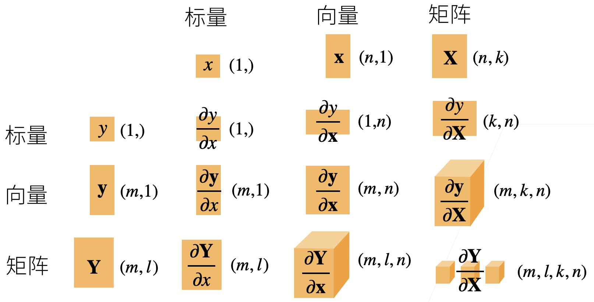

Calculus#
Note
Differential calculus can tell us how to increase or decrease a function’s value by manipulating its arguments. This comes in handy for the optimization problems that we face in deep learning, where we repeatedly update our parameters in order to decrease the loss function.
Derivatives and Differentiation#
Put simply, a derivative is the rate of change in a function with respect to changes in its arguments. For function $f:\mathbb{R}\to\mathbb{R}$
$$f’(x) = \lim_{h \rightarrow 0} \frac{f(x+h) - f(x)}{h}.$$
When $f’(x)$ exits, $f$ is said to be differentiable at $x$.
Suppose that $y=f(g(x))$ and that the underlying functions $y=f(u)$ and $u=g(x)$ are both differentiable. The chain rule states that
$$\frac{dy}{dx} = \frac{dy}{du}\frac{du}{dx}.$$
Partial Derivatives#
Let $y = f(x_1, x_2, \ldots, x_n)$ be a function with $n$ variables. The partial derivative of $y$ with respect to $x_{i}$ is
$$ \frac{\partial y}{\partial x_i} = \lim_{h \rightarrow 0} \frac{f(x_1, \ldots, x_{i-1}, x_i+h, x_{i+1}, \ldots, x_n) - f(x_1, \ldots, x_i, \ldots, x_n)}{h}.$$
We can treat $x_1, \ldots, x_{i-1}, x_{i+1}, \ldots, x_n$ as constants and calculate the derivative of $y$ with respect to $x_i$.
向量求导#
我们使用常用的分子布局符号，即分子 shape 不变分母转置。
标量关于向量（列）的导数是一个行向量：
$$\mathbf{x} = \begin{bmatrix}x_{1}\ x_{2}\ \vdots\ x_{n}\end{bmatrix}$$
$$\frac{\partial{y}}{\partial\mathbf{x}}=\left[
\frac{\partial y}{\partial x_{1}}, \frac{\partial y}{\partial x_{2}}, \ldots ,\frac{\partial y}{\partial x_{n}}
\right]$$
向量（列）关于标量的导数是一个列向量：
$$\mathbf{y} = \begin{bmatrix} y_{1}\ y_{2}\ \vdots\ y_{m} \end{bmatrix} \quad \frac{\partial{\mathbf{y}}}{\partial{x}}=\begin{bmatrix} \frac{\partial y_{1}}{\partial x}\ \frac{\partial y_{2}}{\partial x}\ \vdots \frac{\partial y_{m}}{\partial x} \end{bmatrix}$$
向量（列）关于向量（列）的导数是一个矩阵： $$\mathbf{x} =\begin{bmatrix}x_{1} \x_{2} \ \vdots \x_{n}\end{bmatrix}\quad\mathbf{y} =\begin{bmatrix}y_{1} \y_{2} \ \vdots \y_{m}\end{bmatrix}\quad\frac{\partial{\mathbf{y}}}{\partial\mathbf{x}}=\begin{bmatrix} \frac{\partial y_{1}}{\partial \mathbf{x}}\ \frac{\partial y_{2}}{\partial \mathbf{x}}\vdots \frac{\partial y_{m}}{\partial \mathbf{x}}\end{bmatrix} = \begin{bmatrix} \frac{\partial{y_1}}{\partial{x_1}} & \cdots & \frac{\partial{y_1}}{\partial{x_n}} \ \vdots & \ddots & \vdots \ \frac{\partial{y_m}}{\partial{x_1}} & \cdots & \frac{\partial{y_m}}{\partial{x_n}} \ \end{bmatrix}$$
在这种布局下，链式法则对向量求导也成立。
常用的求导结果#
$$\frac{\partial \text{sum}(\mathbf{x})}{\partial \mathbf{x}} = \mathbf{1}^{T}$$ $$\frac{\partial \left | \mathbf{x} \right | ^{2}}{\partial \mathbf{x}} = 2\mathbf{x}^{T}$$ $$\frac{\partial \mathbf{x}}{\partial \mathbf{x}} = \mathbf{I}$$ $$\frac{\partial A\mathbf{x}}{\partial \mathbf{x}} = \mathbf{A}$$
例.（线性回归）假设$\mathbf{X}\in\mathbb{R}^{m\times{n}}, \mathbf{w}\in\mathbb{R}^{n}, \mathbf{y}\in\mathbb{R}^{m}$，损失函数$z=\left |\mathbf{X}\mathbf{w}-\mathbf{y} \right |^{2} $，求$\frac{\partial{z}}{\partial{\mathbf{w}}}$
矩阵求导#
类似地，我们可以把导数扩展到矩阵：
